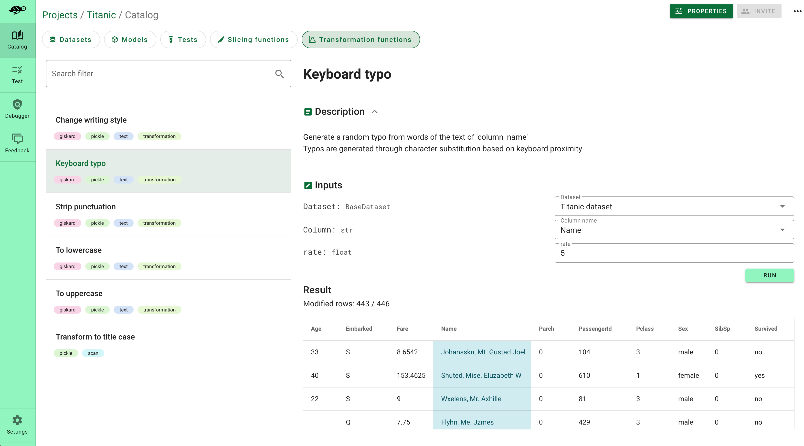

🔄 Define data transformations#
Transformations such as adding typos, switching words, or paraphrasing can help create more diverse and realistic training datasets. This can enhance the model’s resilience to noise and improve its performance on unseen examples.
Giskard enables you to automatically generate transformation functions to make your model more robust (see the scan feature). We propose various transformation functions in the Giskard catalog, such as adding typos or punctuation stripping. Have a look at our Transformation Function Catalog here
This section explains how to create your own transformation function, or customize the functions generated by the Giskard scan and how to save them.
Load transformation functions from the Giskard catalog#
The Giskard catalog provides you with different transformation functions for NLP use cases such as adding typos, or punctuation stripping.
#Import keyboard typo transformations
from giskard.ml_worker.testing.functions.transformation import keyboard_typo_transformation
Create your own transformation function#
To create a Giskard transformation function, you just need to decorate an existing Python function with @transformation_function(). Depending on the argument of the decorator, you can decorate different Python functions filtered by row, dataframe or cell level:
When row_level=True, you can decorate a function that takes a pandas dataframe row as input, and returns a boolean. Make sure that the first argument of your function corresponds to the row you want to filter:
from giskard import transformation_function, demo
import pandas as pd
_, my_df = demo.titanic()
dataset = Dataset(df=my_df, target="Survived", cat_columns=['Pclass', 'Sex', "SibSp", "Parch", "Embarked"])
@transformation_function(row_level=True)
def my_func2(row: pd.Series, offset: int):
row['Age'] = row['Age'] + offset
return row
transformed_dataset = dataset.transform(my_func2(offset=20))
When row_level=False, you can decorate a function that takes a full pandas dataframe as input, and returns a filtered pandas dataframe. Make sure that the first argument of your function corresponds to the pandas dataframe you want to filter:
from giskard import transformation_function, demo
import pandas as pd
_, df = demo.titanic()
dataset = Dataset(df=df, target="Survived", cat_columns=['Pclass', 'Sex', "SibSp", "Parch", "Embarked"])
@transformation_function(row_level=False)
def my_func1(df: pd.DataFrame, offset: int):
df['Age'] = df['Age'] + offset
return df
transformed_dataset = dataset.transform(my_func1(offset=20))
When cell_level=True (False by default), you can decorate a function that takes as argument a value (string, numeric or text), and returns a boolean. Make sure that the first argument of your function corresponds to the value, and that the second argument defines the column name where you want to filter the value:
from giskard import transformation_function, demo
import pandas as pd
_, df = demo.titanic()
dataset = Dataset(df=df, target="Survived", cat_columns=['Pclass', 'Sex', "SibSp", "Parch", "Embarked"])
@transformation_function(cell_level=True)
def my_func3(cell: int, offset: int):
return cell + offset
transformed_dataset = dataset.transform(my_func3(offset=20), column_name='Age')
AI-based tranformation function#
Transformation functions can be very powerful to detect complex behaviour when they are used as fixtures inside your test suite. With the Giskard framework you can easily create complex transformation functions. For example:
@transformation_function(name="Change writing style", row_level=False, tags=['text'])
def change_writing_style(x: pd.DataFrame, index: int, column_name: str, style: str,
OPENAI_API_KEY: str) -> pd.DataFrame:
os.environ["OPENAI_API_KEY"] = OPENAI_API_KEY
rewrite_prompt_template = """
As a text rewriting robot, your task is to rewrite a given text using a specified rewriting style. You will receive a prompt with the following format:
```
"TEXT"
===
"REWRITING STYLE"
```
Your goal is to rewrite the provided text according to the specified style. The purpose of this task is to evaluate how the rewritten text will affect our machine learning models.
Your response should be in the following format:
```
REWRITTEN TEXT
```
Please ensure that your rewritten text is grammatically correct and retains the meaning of the original text as much as possible. Good luck!
```
"TEXT": {text}
===
"REWRITING STYLE": {style}
```
"""
from langchain import PromptTemplate
from langchain import LLMChain
from langchain import OpenAI
rewrite_prompt = PromptTemplate(input_variables=['text', 'style'], template=rewrite_prompt_template)
chain_rewrite = LLMChain(llm=OpenAI(), prompt=rewrite_prompt)
x.at[index, column_name] = chain_rewrite.run({'text': x.at[index, column_name], 'style': style})
return x
Automatically generate some transformation functions through the scan#
Giskard enables you to automatically generate the transformation functions that are the most insightul for your ML models. You can easily extract the results of the scan feature using the following code:
from giskard import Dataset, Model
my_dataset = Dataset(...)
my_model = Model(...)
scan_result = giskard.scan(my_model, my_dataset)
test_suite = scan_result.generate_test_suite("My first test suite")
test_suite.run()[1]
Save your transformation function#
Saving your transformation function to the local Giskard server will enable you to:
Use your transformations for testing purposes: your transformations can be used as fixtures for your test suite
Use the saved transformations to debug your dataset
Use the saved transformations to augment your dataset
To upload your transformation function to the Giskard server, go to upload objects.
